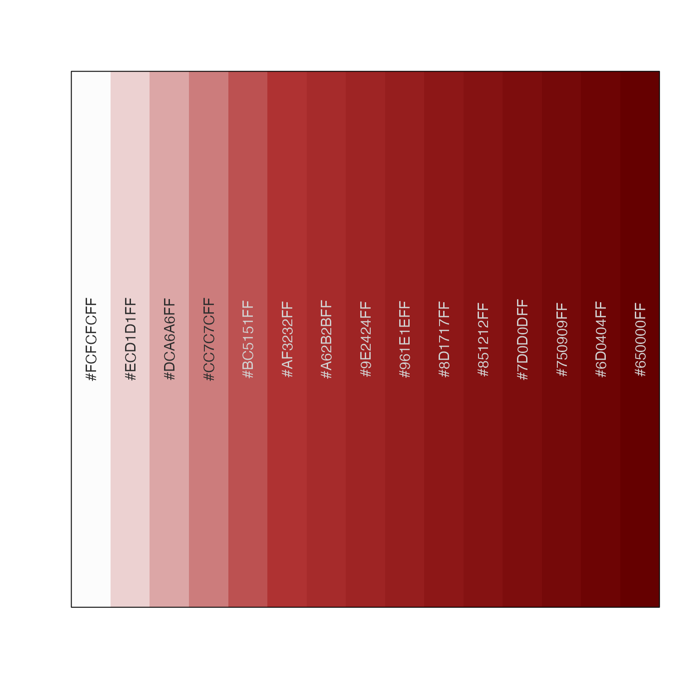

get color ramp by name, color, or function
getColorRamp( col, n = 15, trimRamp = c(0, 0), gradientN = 15, defaultBaseColor = "grey95", reverseRamp = FALSE, alpha = TRUE, gradientWtFactor = 2/3, lens = 0, divergent = NULL, verbose = FALSE, ... )
Arguments
| col | accepts
|
|---|---|
| n | integer number of output colors to return, or NULL if
the output should be a color function in the form |
| trimRamp | integer vector, expanded to length=2 as needed,
which defines the number of colors to trim from the beginning
and end of the color vector, respectively. When |
| gradientN | integer number of colors to expand gradient colors prior to trimming colors. |
| defaultBaseColor | character vector indicating a color from which to begin a color gradient, only used when col is a single color. |
| reverseRamp | logical indicating whether to reverse the resulting color ramp. This value is ignored when a single value is supplied for col, and where "_r" or "_rev" is detected as a substring at the end of the character value. |
| alpha | logical indicating whether to honor alpha transparency
whenever |
| gradientWtFactor | numeric value used to expand single color
input to a gradient, using |
| lens, divergent | arguments sent to |
| verbose | logical whether to print verbose output |
Details
This function accepts a color ramp name, a single color, a vector of colors, or a function names, and returns a simple vector of colors of the appropriate length, suitable as input to a number of plotting functions.
When n is NULL, this function returns a color function,
wrapped by grDevices::colorRampPalette(). The colors used
are defined by gradientN, so the grDevices::colorRampPalette()
function actually uses a starting palette of gradientN number
of colors.
When n is an integer greater than 0, this function returns
a vector of colors with length n.
When col is a single color value, a color gradient is created
by appending defaultColorBase to the output of
color2gradient(..., n=3, gradientWtFactor=gradientWtFactor).
These 4 colors are used as the internal palette before
applying grDevices::colorRampPalette() as appropriate.
In this case, gradientWtFactor is used to adjust the
strength of the color gradient. The intended use is:
getColorRamp("red", n=5). To remove the leading white
color, use getColorRamp("red", n=5, trimRamp=c(1,0)).
When col contains multiple color values, they are used
to define a color ramp directly.
When col is not a color value, it is compared to known color
palettes from RColorBrewer::RColorBrewer and viridisLite,
and will use the corresponding color function or color palette.
When col refers to a color palette, the suffix "_r" may
be used to reverse the colors. For example,
getColorRamp(col="RdBu_r", n=9) will recognize the
RColorBrewer color palette "RdBu", and will reverse the colors
to return blue to red, more suitable for heatmaps where
high values associated with heat are colored red,
and low values associated with cold are colored blue.
The argument reverseRamp=TRUE may be used to reverse the
returned colors.
Color functions from viridisLite are recognized:
"viridis", "cividis", "inferno", "magma", "plasma".
The argument trimRamp is used to trim colors from the beginning
and end of a color ramp, respectively. This mechanism is useful
to remove the first or last color when those colors may be too
extreme. Note that internally, colors are expanded to length
gradientN, then trimmed, then the corresponding n colors
are returned.
The trimRamp argument is also useful when returning a color
function, which occurs when n=NULL. In this case, colors are
expanded to length gradientN, then are trimmed using the
values from trimRamp, then the returned function can be used
to create a color ramp of arbitrary length.
Note that when reverseRamp=TRUE, colors are reversed
before trimRamp is applied.
By default, alpha transparency will be maintained if supplied in the
input color vector. Most color ramps have no transparency, in which
case transparency can be added after the fact using alpha2col().
See also
Other jam color functions:
alpha2col(),
applyCLrange(),
col2alpha(),
col2hcl(),
col2hsv(),
color2gradient(),
fixYellowHue(),
fixYellow(),
hcl2col(),
hsv2col(),
isColor(),
kable_coloring(),
makeColorDarker(),
make_styles(),
rgb2col(),
setCLranges(),
setTextContrastColor(),
showColors(),
unalpha(),
warpRamp()
Examples
colorList <- list(red4=red4, BuOr=BuOr); # If RColorBrewer is available, use a brewer name if (suppressPackageStartupMessages(require(RColorBrewer))) { RdBu <- getColorRamp("RdBu"); RdBu_r <- getColorRamp("RdBu_r"); colorList <- c(colorList, list(RdBu=RdBu, RdBu_r=RdBu_r)); showColors(RdBu); }if (suppressPackageStartupMessages(require(viridis))) { viridisV <- getColorRamp("viridis"); colorList <- c(colorList, list(viridis=viridisV)); } # for fun, put a few color ramps onto one plot showColors(colorList, cexCellnote=0.7);